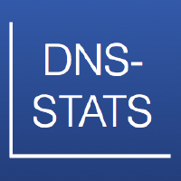

DNS-STATS is a covering entity for the implementation of open source DNS statistics collection and presentation software. All software is hosted on the DNS-STATS GitHub project
The Compactor is a suite of tools which can capture DNS traffic (from either a network interface or a PCAP file) and store it in the Compacted-DNS (C-DNS) file format described in RFC8618. PCAP files for the captured traffic can also be reconstructed.
2021-04-19: Latest experimental release is Compactor 1.2.0-rc1
2020-12-09: Latest production release is Compactor 1.1.0
Visualizer is a framework for a system which can:
2021-03-03: Latest production release is Visualizer 1.0.0
Note that since the release of DNS-STATS Visualizer the DNS-STATS Presenter is no longer actively developed.
The Presenter 'Hedgehog' is an alternative to the DSC presenter application (for DSC XML statistics) and can be used to display real time statistics for DNS traffic.
2019-01-09: Latest release is Hedgehog 2.4.2
The DNS-STATS Presenter and Compactor were originally developed for ICANN by Sinodun IT and are now released under open source licenses.
Join the DNS-STATS users mailing list: dns-stats-users